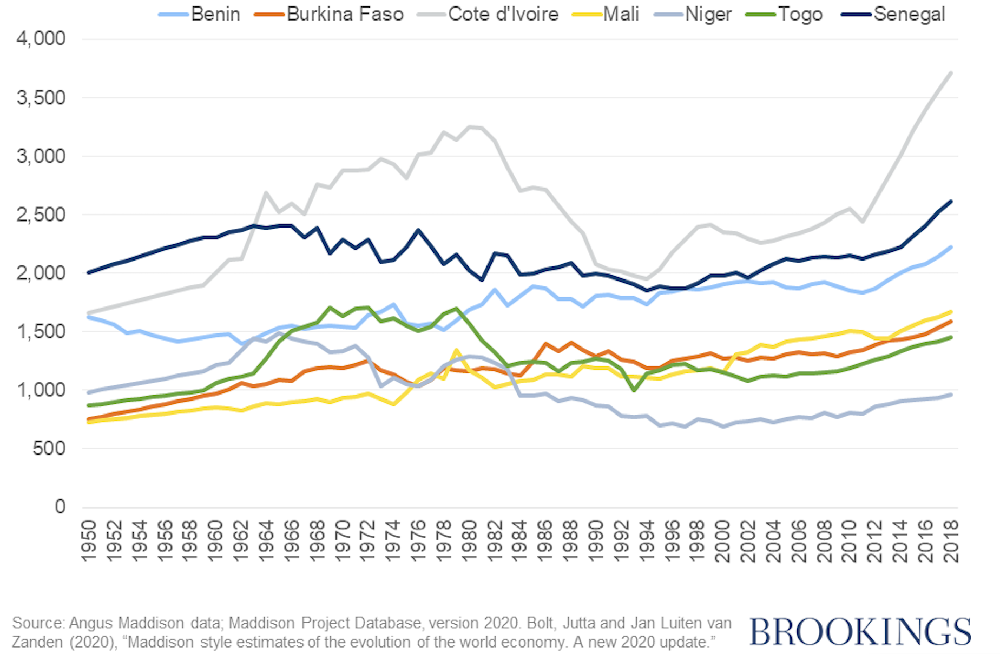

Economic Integration in Francophone Africa
The Lingering Influence of Former Colonial Powers
Introduction
Colonialism compelled the Global South to adopt political and economic structures and institutions that endure to this day. Nonetheless, with the rise of globalization and regional integration movements exemplified by the recent proposal for a common currency by the Brazilian and Argentine governments, how can postcolonial environments affect regional economic integration in former colonial regions? In this essay, I examine this question through the case study of Francophone Africa. I conclude that while certain aspects of the postcolonial context may facilitate advantageous institutionalized economic integration, France’s persistent influence in the region will prevent the integration process.
A Background of The CFA Zone
The CFA franc is a monetary union in Francophone Africa managed by France. It was originally introduced as the “Franc of the French Colonies in Africa,” but is now referred to as the “African Financial Community.” The CFA franc is divided into two monetary unions: the West African Economic and Monetary Union (UEMOA) and the Central African Economic and Monetary Community (CEMAC). UEMOA comprises eight West African countries, including Benin, Burkina Faso, Côte d’Ivoire, Guinea-Bissau, Mali, Niger, Senegal, and Togo, while CEMAC comprises six Central African countries, including Cameroon, Central African Republic, Chad, Republic of Congo, Equatorial Guinea, and Gabon (see Figure 1). Understanding the CFA franc is necessary to understand how France has maintained its influence over African countries through an integrated system of monetary unions that remain under its control.
Figure 1. Francophone Africa’s participation in trade blocs  Note. Adapted from Dakar & Kampala, “Making Sense of West Africa’s New Currency”, The Economist, 2020.
Note. Adapted from Dakar & Kampala, “Making Sense of West Africa’s New Currency”, The Economist, 2020.
Pigeaud et al. (2020) demonstrate how the concept of the CFA franc can be traced back to the franc zone, which was established in 1939 to centralize the coordination of economic operations and establish free trade within the French empire. The CFA zone was created in Africa in 1945 to institutionalize these policies, resulting in the introduction of the CFA franc, pegged to the French franc, with currency policy administered in Paris. This system, made to serve the “colonial pact”, incentivized cheaper trade with France and disincentivized trade with other countries (p.14). The CFA currencies are freely convertible to the Euro but have restrictions on convertibility with other currencies. In practice, the French Treasury generally regulates conversions by initially exchanging currencies for the Euro, which can subsequently be traded for CFA franc currencies. This results in increased demand for and strengthening of the Euro. Additionally, the central banks in the CFA zone are required to deposit foreign exchange reserves in the French Treasury, a requirement that has changed over time. Originally, African banks had to deposit all foreign exchange reserves except what was needed for daily operations and other obligations, but this has decreased over the years to 50% of foreign exchange reserves (p.22). The French economic backing has led to low inflation that is well below Africa’s average at 3% (p.33). However, in exchange for this low inflation rate, the region has experienced substantial economic stagnation and lower GDP growth in comparison to other African economies (see Figures 2 and 3).
Figure 2. WAEMU GDP per capita, 1950-2018 (US dollars)  Note. Demonstrates the stagnating growth CFA countries have had since the 1950s (adapted from Zafar “CFA franc zone: Economic development and the post-COVID recovery”, Brookings Institute, 2021).
Figure 3. Average annual per capita growth by select country, 2000-2019 (%)  Note. CFA countries have lower than average GDP growth in contrast to other African countries (adapted from Zafar “CFA franc zone: Economic development and the post-COVID recovery”, Brookings Institute, 2021).
Note. CFA countries have lower than average GDP growth in contrast to other African countries (adapted from Zafar “CFA franc zone: Economic development and the post-COVID recovery”, Brookings Institute, 2021).
The economies of Francophone Africa and other colonial regions were designed to export extractable goods to more developed countries, discouraging intraregional trade. This has resulted in low levels of intraregional trade in the present day, as shown in Figures 4 and 5. However, the lack of intraregional trade in Francophone Africa reduces the benefits of regional integration, which undermines the motivation to pursue integration models designed to facilitate such trade. These regions become ‘primary associations’ that group, “a series of underdeveloped countries around a single economically developed country” (Garcia, 1961, p.23-30). Therefore, there is less incentive for Francophone Africa to pursue regional integration. Even long after France’s formal control, “the African countries remain largely producers of unprocessed raw materials and trade more with Europe than with each other” (Pigeaud & Sylla, 2020, p.105). In other words, colonial history hinders the necessity for economic integration by removing incentives to boost trade within the region.
Figure 4. Share of intra-REC (regional economic community) of total trade (in percent cent)  Note. Figure shows intra-regional trade is low in Africa, unlike other regional economic communities. (adapted from Zafar “CFA franc zone: Economic development and the post-COVID recovery”, Brookings Institute, 2021).
Note. Figure shows intra-regional trade is low in Africa, unlike other regional economic communities. (adapted from Zafar “CFA franc zone: Economic development and the post-COVID recovery”, Brookings Institute, 2021).
Figure 5. Share of intra-regional GVC (global value chains) flows in total GVC participation  Note. Figure shows the region’s domestic economic activity in relation to its international economic activity. (adapted from “Key Statistics and Trends in Regional Trade in Africa,” UNCTADStat, 2019, p. 24).
Note. Figure shows the region’s domestic economic activity in relation to its international economic activity. (adapted from “Key Statistics and Trends in Regional Trade in Africa,” UNCTADStat, 2019, p. 24).
The CFA as a Framework for Integration?
To understand the impact of the CFA franc on integration, it is crucial to comprehend the four different approaches that aim to achieve a more beneficial integration. These approaches involve varying degrees of rejection of the CFA franc. By examining the various approaches, it is possible to observe how the colonial structure of the CFA impacts progress in the development of new integration models.
The Reformist Path Forward
According to Sylla, the first two approaches to progress are “symbolic reformism” and “adaptive reformism,” which have been the only reforms implemented thus far. “Symbolic reformism” only makes superficial changes to the current system, whereas “adaptive reformism” introduces more substantive changes while still keeping power concentrated in Paris. Both of these approaches prevent an integration model that would be beneficial for Africa. These approaches essentially repackage the French system under the guise of African autonomy. All reforms enacted in the CFA region fall under these categories. The reforms have exemplified how French influence has impeded and continues to impede movements for the integration of Africa that are beneficial to Africa. The current system, which is designed for the benefit of France, only undergoes changes in name and policy with these reforms, but no change is made to the source of the problem, which is French influence.
For example, in 1958, as French colonies in Africa gained independence, the French renamed the currency from “Franc of the French Colonies in Africa” to “Franc of the French Community of Africa” (A Brief History Of The CFA Franc, 2012). Additionally, the required amount of foreign reserves that African banks need to deposit has also decreased over time due to the pressure from African nations on France. Furthermore, a recent reform proposal in 2019 consisted of renaming the West African Economic and Monetary Union (WAEMU) CFA franc to “ECO” and rebrand it under the Economic Community of West African States (ECOWAS). The ECOWAS is supported by French President Macron, who is willing to renegotiate terms on the new system.
These reforms create a convenient distraction for France by diverting attention from French exploitation of the CFA structure. This complicates the relationship between France and Africa, obscures France’s responsibility for the stagnation of the CFA zone, and allows France to sustain its economy at Africa’s expense. If these reforms alone continue to be implemented, the French CFA zone will continue to obstruct the process of restorative integration for Africa.
“Sovereign Abolitionism”
“Sovereign abolitionism” is the most radical rejection of the CFA franc, as it seeks to abolish the unified currency and return the power of monetary policy to each state. Proponents of ‘sovereign abolitionism’ seek to enhance regional integration by eliminating all aspects of the CFA franc system, including the currency bloc, and establishing trade partnerships that re-envision what integration can mean specifically in Africa. Only “neoliberal abolitionism” and “sovereign abolitionism” advocate for creating the change necessary to advance African interests. However, unlike “neoliberal abolitionism,” “sovereign abolitionism” regards the CFA franc as a hindrance to integration, as it would have to eliminate the entire concept of the CFA. Advocates for “sovereign abolitionism” see the CFA as a distraction to pursuing a new integration model beneficial for Africa.
“Neoliberal Abolitionism”
The previous three approaches have demonstrated that the CFA’s efforts to maintain the status quo have impeded the development of new integration models. However, the “neoliberal abolitionist” approach proposes that the CFA can serve as a framework for new integration models. “Neoliberal abolitionism” seeks to preserve a monetary union in the region while breaking away from French influence. This view regards the CFA franc as a valuable framework for a new, self-administered, supranational, integrated institution that includes a currency union. Although the CFA franc was imposed by France, which cleared several political hurdles such as a lack of political will and public support, it is crucial to acknowledge its oppressive history. The existing regionalism culture can facilitate a smoother transition towards a currency union. This approach of moving away from the CFA franc could therefore facilitate new forms of integration.
The ECOWAS was initially meant to follow through with these reforms, but it has been heavily altered by the French who have transformed it into a change of “symbolic reformism” (Sylla 2022, p.55). If this strategy were to be pursued, it would require careful planning to avoid reproducing the same oppressive policies and institutions as the previous system. Although Francophone Africa does not face a lack of political will for integration, it must confront France’s determination to maintain its dominance in the region, which is the most significant challenge of the “neoliberal abolitionism” approach (this determination will be seen in the next section).
The History of French Intimidation and African Resistance
Achieving African economic independence from France remains challenging due to the political history surrounding the CFA zone. To elaborate, France has exerted pressure on African countries to retain the colonial currency. Guinea serves as a well-known example, having chosen not to adopt the currency. When French President de Gaulle visited Guinea before a referendum on whether the country would join the CFA zone, the deputy of the French National Assembly in Guinea famously angered de Gaulle by saying, “We prefer to be poor in freedom than rich in slavery.” Despite de Gaulle’s threats to cut off development aid, Guinea voted overwhelmingly for complete independence. However, France had already extracted all of Guinea’s reserves before the referendum, and after the vote, “ended its budgetary assistance and ceased the pension payments to the 20,000 Guinean veterans who had fought for France. It also unsuccessfully attempted to block Guinea’s entry into the United Nations” (Pigeaud et al., 2020, p.40-3). France utilized all available means to prevent Guinea from seceding, and it has had the added effect of deterring other nations from considering secession in the future.
Future leaders who dared to question the CFA franc were reprimanded, as seen in the case of Mali’s attempt to introduce an independent currency. In 1967, neighboring countries in the CFA franc zone limited trade with Mali, which ultimately forced it to return to the CFA zone (Pigeaud et al., 2020, p.47). Similarly, in 1963, Togo’s President Olympio was assassinated after running on a platform to leave the CFA zone; a coup was then orchestrated to bring a French-friendly president to power (p.50). These are just a few examples of French intimidation and sabotage, and there are likely many others that remain undocumented. These tactics of persuasion were likely also used during the negotiations for the new ECOWAS agreement, which is set to take full effect in 2027. Through these means, France has maintained influence in African countries that use the CFA franc.
A Realistic Future
The French presence in Africa has hindered the development of integration that benefits African people. France will likely continue to impede meaningful integration, using tactics such as “symbolic reformism” and “adaptive reformism” to blur the connection between prosperous France and oppressed CFA Africa. However, influential figures will continue to draw attention to these issues out of concern for African sovereignty. For example, an article in Foreign Policy magazine titled “Macron Isn’t So Post-Colonial After All’’ by Gladstein (2021) criticized the French government’s actions. Some figures have used public appearances to shame France for its actions, such as Italian Prime Minister Giorgia Meloni, who displayed a CFA currency note during a speech criticizing the CFA system (see Figure 5). However, French publication Le Monde responded to Meloni’s remarks with an article titled”Giorgia Meloni’s exaggerations about France’s ‘colonial currency’” (Dagorn, 2022). Prime Minister Meloni is pressuring the French to reform by highlighting the issues of the CFA, even if some may consider it a mere stunt. In response, French advocates of the system have attempted and will continue to divert attention away from those highlighting the issues.
Figure 5. Prime Minister of Italy Giorgia Meloni Holding a CFA Bill While Addressing French Oppression in Africa  Note. Adapted from “Giorgia Meloni’s exaggerations about France’s ‘colonial currency,’” Le Monde, 2022.
Note. Adapted from “Giorgia Meloni’s exaggerations about France’s ‘colonial currency,’” Le Monde, 2022.
Facilitated meaningful integration based on the CFA franc using “neoliberal abolitionism” is a possibility. However, the premise that French institutions will facilitate such integration falls apart when faced with resistance from France, which has a vested interest in keeping the CFA in place and the power to act on its will. An alternative route to meaningful integration could be “sovereign abolitionism,” which rejects the CFA approach entirely. Regardless of the approach taken, it will be essential to prioritize the needs and interests of African nations and their people, rather than external actors, to achieve sustainable integration. The fight for meaningful integration in Africa, free from the constraints of colonialism and neocolonialism will require persistent efforts to overcome the obstacles posed by institutions like the CFA franc.
Works Cited
A Brief History Of The CFA Franc. (2012, February 19). African Business. Link
Background Information from the Study Guide to The Fabric of Reform—An IMF Video. (n.d.). Retrieved April 26, 2023, from Link
Dagorn, G. (2022, November 26). Giorgia Meloni’s exaggerations about France’s “colonial currency.” Le Monde.Fr. Link
Fofack, H. (2021, December). Economic Integration in Africa (AfCFTA) – IMF Finance & Development Magazine | December 2018. IMF. Link
Garcia, A. (1961). Situation de la zone franc. L’Information Géographique, 25(1), 23–30. Link
Gladstein, M. K., Alex. (2021, August 3). Macron Isn’t So Post-Colonial After All. Foreign Policy. Link
Key Statistics and Trends in Regional Trade in Africa. (2019). UNCTAD. Link
Making sense of west Africa’s new currency. (2020, January). The Economist. Link
Pigeaud, F., Sylla, N. S., & Fazi, T. (2020). Africa’s Last Colonial Currency: The CFA Franc Story. Pluto Press. Link
Signé, L. (2019, December 7). How the France-backed African CFA franc works as an enabler and barrier to development. Brookings. Link
Sylla, N. S. (2020). Moving forward to African Monetary Integration: Lessons from the CFA Franc. Africa Development / Afrique et Développement, 45(2), 39–58.
Zafar, A. (2021, August 5). CFA franc zone: Economic development and the post-COVID recovery. Brookings. Link